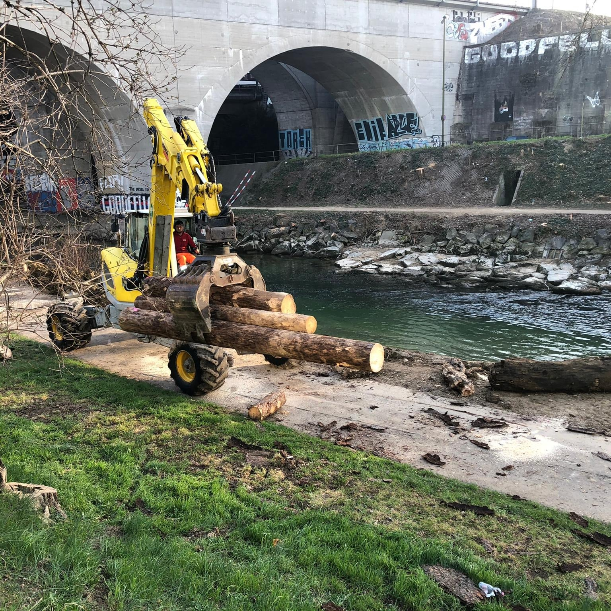

Gewässer gemeinsam denken
Flüsse sind Lebensraum und Erholungsraum
Werden an einem Flussabschnitt Bauarbeiten ausgeführt, müssen Behörden verschiedene Interessen berücksichtigen: Naturschutz, Hochwasserschutz, Fischerei und Sport- und Freizeitbedürfnisse. Gerade in der dicht besiedelten Region Basel sind Gewässer und Ufer wichtige Natur- und Naherholungsräume.
